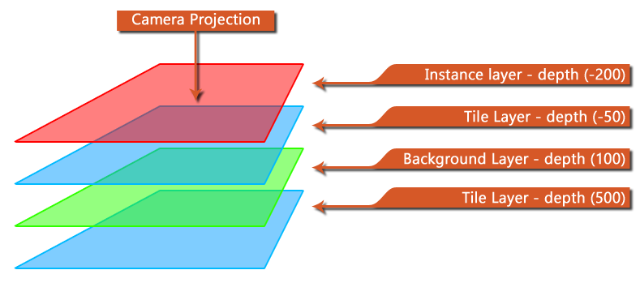

Diese Funktion kann verwendet werden, um die Tiefe der gegebenen Ebene zu ändern und die Reihenfolge zu ändern, in der ihr Inhalt auf dem Bildschirm wiedergegeben wird. Sie geben die Layer-ID an (die Sie erhalten, wenn Sie die Ebene mit erstellen layer_create() ) oder der Layername (als String - dies wirkt sich auf die Leistung aus) und geben Sie dann die neue Tiefe ein, auf die es gesetzt werden soll (ein Ganzzahlwert von -16000 bis 16000). Die Ebenentiefe wird definiert, wenn sie "weiter weg" von der Kamera und niedriger als "näher" zur Kamera ist. Wenn Sie also drei Ebenen mit den Tiefen -100, 0, 100 haben, werden die Ebenen in der Reihenfolge 100 gezeichnet. 0, -100, so dass die "oberste" Ebene (dh die am nächsten zur Kameraansicht und so über alles andere gezeichnet) die Ebene mit der -100 Tiefe ist.
Das folgende Bild zeigt eine schematische Darstellung, wie die Tiefe für Ebenen funktioniert: 
Beachten Sie, dass Sie die Tiefe eines Layers jederzeit mit der Funktion überprüfen können layer_get_depth. Beachten Sie auch, dass die minimale und maximale Schichttiefe zwischen -16000 und 16000 liegt und alles außerhalb dieser Tiefen nicht gerendert wird. Wenn Sie eine Tiefe außerhalb dieses Bereichs benötigen, müssen Sie die Funktion verwenden layer_force_draw_depth.
layer_depth(layer_id, depth)
Streit Beschreibung layer_id Der eindeutige ID-Wert des Layers zum Festlegen der Tiefe von (oder des Layernamens als String) depth Die neue Tiefe für die Ebene
N/A
if layer_get_depth(layer) != -100
{
layer_depth(layer, -100);
}
Der obige Code ruft die Tiefe der Ebene ab, auf der die Instanz ausgeführt wird, auf der der Code ausgeführt wird, und wenn sie nicht -100 ist, wird die Tiefe auf -100 festgelegt.